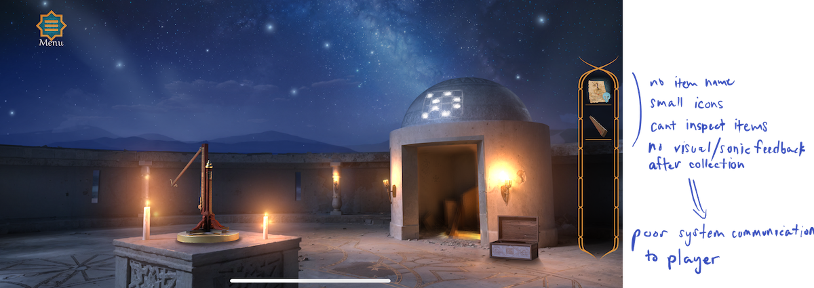
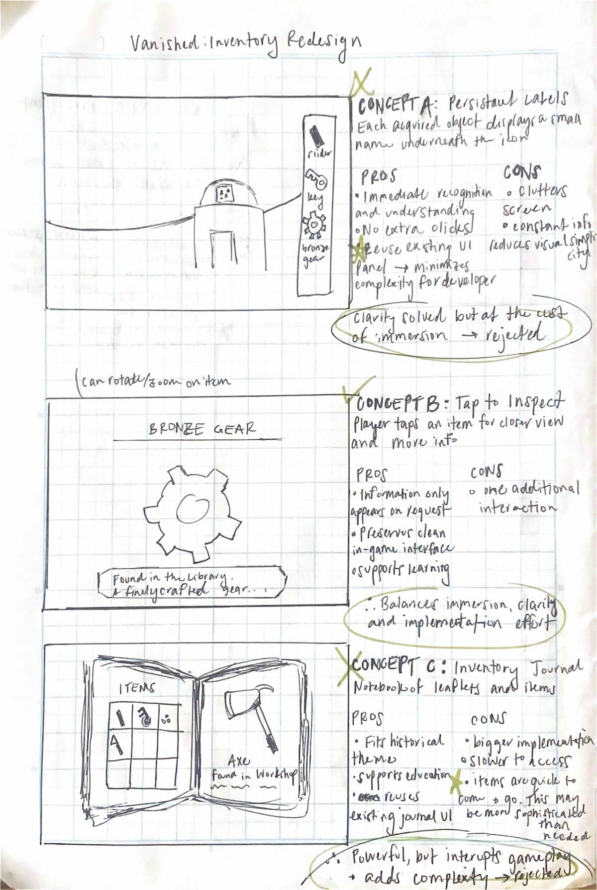

Vanished Puzzle Quest
2024
UX Research, Playtesting
Collaborators: Unity Productions Foundation, Saltium Games


About
Vanished is a first-person puzzle game based in the Islamic Golden Ages that challenges players to use found objects to unravel a mystery against an unknown foe. By rebuilding ancient tools and instruments, players open doors and piece together lost history. I joined the project during development as a playtester and UX contributor, collaborating with the team to evaluate gameplay, improve puzzle interactions, and identify opportunities to create a smoother player experience.
Research
During development, we tested the game with volunteers and collected information to inform development priorities and production decisions. We conducted regular playtesting and maintained documentation logs with feedback categorized by type - usability concerns, technical bugs, our observations, user stated pain points, and visual issues. This allowed me to synthesize our findings and reveal patterns amongst players. After identifying some common issues, I designed solutions that balanced player experience, developer process, stakeholder considerations, while supporting the game's goals of challenge, discovery, and learning.
Redesign: Inventory Management
Playtesting the early versions revealed a few overarching
usability issues with players: object discoverability, progression
confusion, and inventory comprehension. Because the core gameplay
revolves around collecting, combining, and learning about
historical artifacts, understanding what each object is and how it
relates to the surrounding environment is fundamental to both
progression and learning. The existing inventory represented
collected items as small icons without labels, inspection, or
additional context. Players were often left uncertain about an
item's identity or purpose. In many cases, this uncertainty
appeared to shift player behavior away from intentional reasoning
and toward a brute force approach, such as repeatedly combining
objects or testing every possible interaction.
The inventory system introduced unnecessary uncertainty that distracted players from the intended puzzle-solving experience. Rather than stripping down puzzle level design and reducing challenge, I proposed a more supportive inventory system that would provide clearer context around collected objects and allow players to spend more time reasoning through puzzles rather than guessing what they were carrying and quitting out of annoyance.

Original inventory system, annotated
The current inventory provides insufficient information for players to confidently identify, understand, and apply collected objects within puzzle-solving contexts.
Design Goals
- • Help players confidently identify collected objects.
- • Provide additional context without eliminating the need for interpretation.
- • Keep the interface uncluttered for small mobile screens.
- • Reduce cognitive load while preserving immersion.
- • Preserve the game's goals of exploration, challenge, and learning.
Selected Direction
I selected the tap-to-inspect approach because it quickly provides contextual information only when requested without breaking immersion. Persistent labels on items improved understanding but created visual clutter, which is especially felt on mobile screens. A dedicated inventory journal offered richer educational content but was overly complex for how simple most objects were and was likely to slowdown gameplay. Instead of addressing the challenges by removing layers from the game, the selected direction supported the current gameplay while balancing clarity, player agency, and feasibility.

Concept exploration for inventory system
Reflection
Working on Vanished reinforced how (game) design requires balancing competing priorities beyond usability alone. Design decisions are shaped by technical limitations, production constraints, narrative goals, and the emotional experience the game aims to create. Unlike productivity-focused products, games encourage players to spend time rather than save time by completing tasks as efficiently as possible. With games, there is a bigger responsibility to the player and their wants. Co-designing with real users becomes very powerful in shaping a game and goes beyond what technical predictions and internal reviews can provide. As a designer, I am tasked with finding pivot points between clarity, challenge, discovery, and learning.
Project Status
Vanished Puzzle Quest was commercially released in March 2026. My contributions were made during development through UX research, playtesting, and design exploration. The inventory redesign presented above remained a speculative UX proposal and was not implemented in the released game.